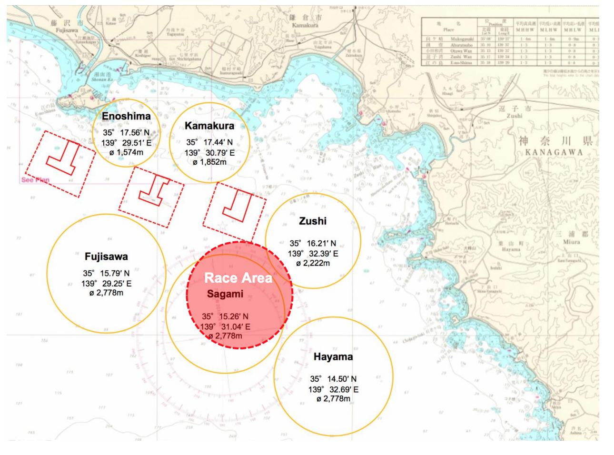

体育会ヨット部
入力ページ
出力ページ
テスト用入力ページ
テスト用出力ページ
場所
逗子(逗子マリーナ寄り)
逗子(葉山マリーナ寄り)
葉山(森戸海岸寄り)
相模(葉山沖)
江ノ島
八景
風向
0
10
20
30
40
50
60
70
80
90
100
110
120
130
140
150
160
170
180
190
200
210
220
230
240
250
260
270
280
290
300
310
320
330
340
350
360
度 風速
0
1
2
3
4
5
6
7
8
9
10
11
12
13
m 波高
0
0.5
1.0
1.5
2.0
2.5
3.0
m 天気
快晴
晴れ
曇り
雨
練習メニュー
その他
